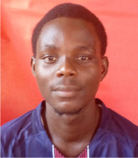

Bolaji Ayomide Joseph

Summary
Creative, good team player, analytical, problem solving,
reliable leadership and teaching experience, always seeking
for opportunities which enhances and sharpens my skills with
the sole aim of contributing positively to my organization
and host communities.
Education
-
Topmost College of Education, Lagos, Nigeria.
Professional Diploma in Education,
April 2021.
-
University of Lagos, Nigeria.
M. Sc. Medical Physics,
January 2020.
-
Federal University of Agriculture, Abeokuta, Nigeria.
B. Sc. Physics,
November 2015.
Work Experience
-
Sanya Senior Grammar School, Surulere, Lagos, Nigeria.
March 2021 - Till Date
- Prepare scheme of work and teach mathematics at high school level.
- Preparation of lesson note, mark, analyzes and collates test and examination.
- Filling and keeping of statutory records (attendance, mark book)
- Invigilating of internal and external examinations.
-
Olat Progressive College, Surulere, Lagos, Nigeria.
Sept. 2018 - Dec. 2020
- Gained valuable experience in teaching and organization.
- Worked on mathematics assessment.
- Performed several class activities to enhance teaching.
-
Udo Mixed Senior Commercial Secondary School, Edo State, Nigeria.
April 2016 - April 2017
- Delivered several lectures on topics relating to mathematical and physical sciences.
- Analyzed various complex physical problems that developed efficient problem-solving skills.
- Organizing some learning programs aimed at providing reliable technical knowledge to students.
Skills
- Microsoft Office Proficient
- Good writing skills
- Analytical Skills
- Community Management
- Learning technology
Certification
- Teachers Registration Council of Nigeria
LA/R/19453
June 2022
Professional Affiliation(s)/Position held
- Nigeria Association of Medical Physicists, Member
- Nigeria Union of Teachers, Member
- Teachers Registration Council of Nigeria, Member
- Mathematics Association of Nigeria, Member
Contact Me
My Hobbies